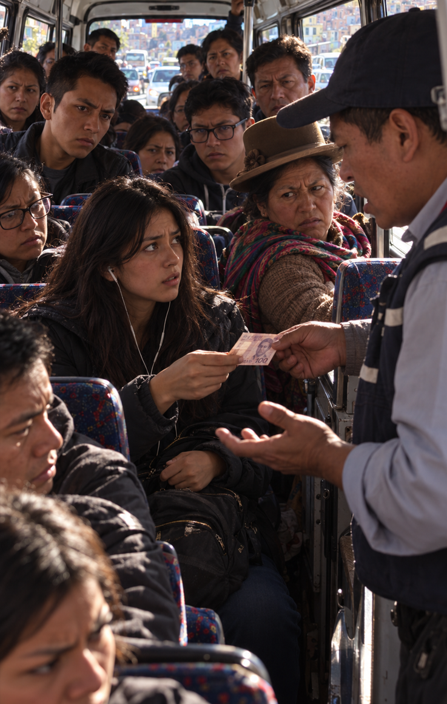

2/3
Camino actual: El Billete de la Discordia
🔊 Narración:
Alía suspira y le pasa el billete de 100 al conductor. Este frena en seco y le recrimina: "¿No tienes suelto, señorita?".
El minibús se detiene por completo y todos los pasajeros voltean a mirarla con furia, esperando que alguien logre fraccionar el dinero.
♦ ───── ♦